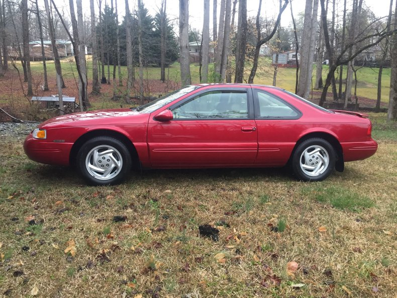

Lab 6 - Arrays & Objects
Challenge
The challenge of Lab 6 was to use an array and an object, and learn how to output them correctly. Displaying the array was straightforward, while displaying the object was more challenging.
Problems
At first, my script from JavaScript was not displaying locally on my webpage. After some troubleshooting, I learned that I still had leftover code from Lab 5 that was displaying the variable "age," which is used differently in this Lab. Once I deleted that line, my script correctly displayed on my webpage.
Reflection
This was a fun lab that iterated on what we learned in Lab 5. It was fun to experiment with arrays and objects and to see the differences in how you have to treat them in the JavaScript code. Most of my efforts in this lab were focused on coding in JavaScript.
Results
You are viewing the index.html file I created. Here is the program execution, outputting an array "myTransport" and an object "myMainRide":
Script Output
Below is a screenshot of my JavaScript code in VSCode.